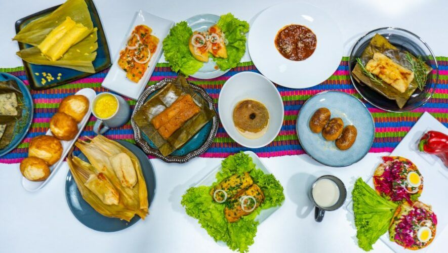
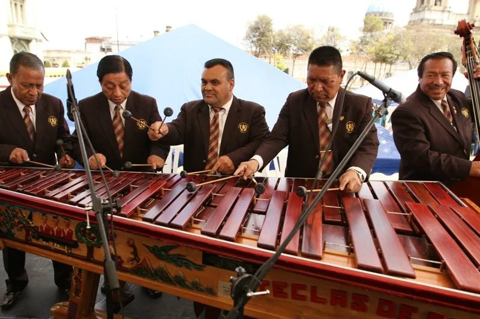

Explorando la Cultura Guatemalteca
En Guatemala, al igual que en cualquier otro país, una cultura se refiere a las creencias, valores, tradiciones, normas y prácticas compartidas por un grupo de personas que forman parte de una nación. La cultura guatemalteca es diversa y se compone de diferentes elementos que han influido en su desarrollo a lo largo de la historia.

El Sonido Nacional
Sumérgete en los ritmos vibrantes de la marimba, el instrumento musical más emblemático de Guatemala. Descubre cómo la música de la marimba ha sido parte integral de la identidad cultural del país durante siglos.La música guatemalteca es diversa y abarca diferentes géneros y estilos. La marimba, un instrumento de percusión tradicional, es considerado el símbolo musical de Guatemala. La música folclórica, los ritmos africanos de la música garífuna y la música maya contemporánea son parte de la escena musical del país.

Arte Contemporáneo
Explora el fascinante mundo del arte maya contemporáneo. Conoce a los talentosos artistas que fusionan las tradiciones ancestrales con la expresión artística moderna, creando obras únicas y cautivadoras.Guatemala es conocida por su artesanía tradicional, que incluye tejidos de alta calidad, como los textiles de colores brillantes y los tejidos de telar de cintura. Los trajes típicos y las prendas elaboradas a mano son parte integral de la identidad cultural guatemalteca.
Volver a Inicio